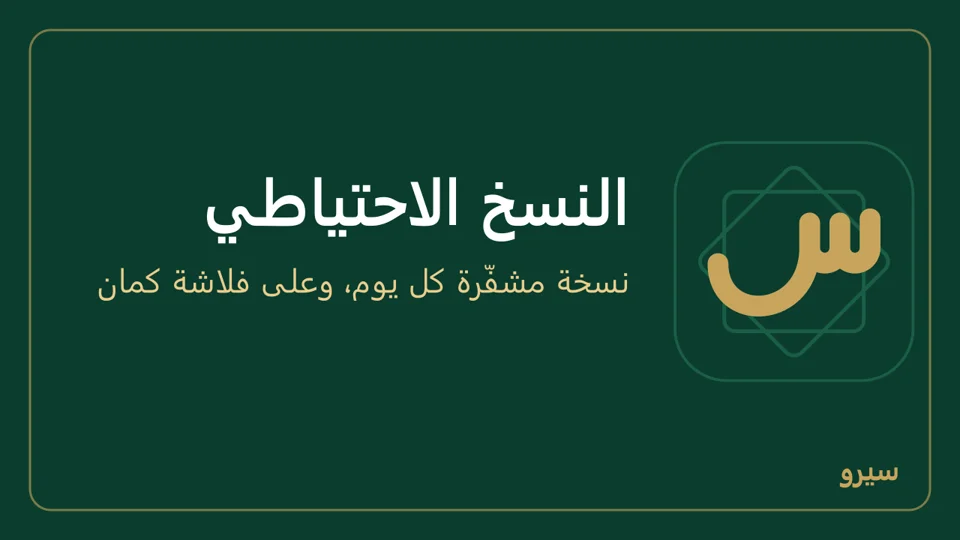
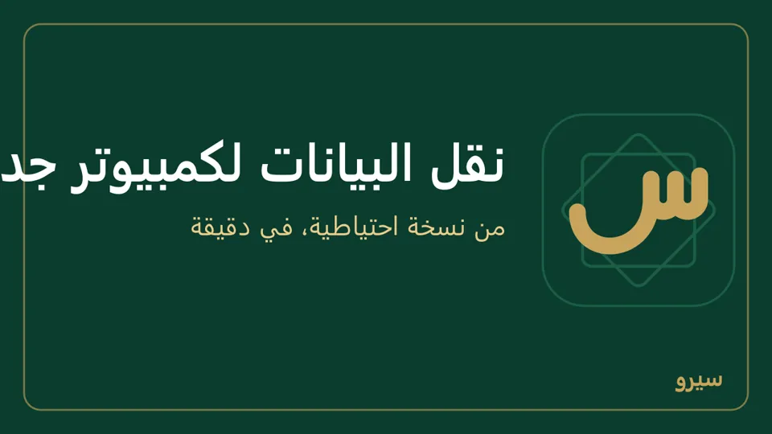
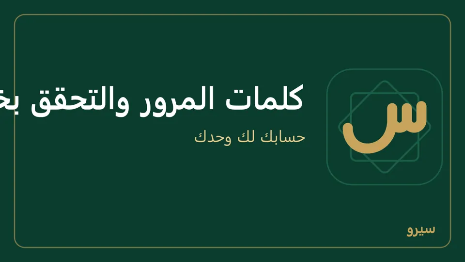

الأمان والنسخ الاحتياطي
بياناتك على جهازك وحده. النسخة الاحتياطية المشفّرة هي ما يحميها من عطل الجهاز أو ضياعه.
- النسخ الاحتياطي على الكمبيوتر
- الاسترجاع ونقل البيانات بين الأجهزة
- البدء من الصفر
- النسخ والقفل على الجوال
- كلمات المرور والتحقق بخطوتين
النسخ الاحتياطي على الكمبيوتر
- افتح الإعدادات ← التكامل وانزل إلى النسخ الاحتياطي.
- اكتب كلمة سر للتشفير (8 أحرف على الأقل) ثم مرة ثانية في اكتبها مرة ثانية، وحفظ. احفظها عندك: من يفقدها يفقد النسخ. لتغييرها اكتب الجديدة في الخانتين نفسيهما. وما دامت المزامنة عبر Google Drive تعمل لا تتغيّر: الأجهزة الأخرى تفتح ملفاتها بهذه الكلمة. أوقف التشفير زر وحده يسألك أولاً: النسخ بعده يقرؤها كل من يأخذها، والمشفّرة قبله تبقى بكلمة السر القديمة، وبلا كلمة سر يفتح نسيت كلمة المرور؟ على هذا الكمبيوتر أي حساب لمن يجلس عليه.
- يأخذ البرنامج نسخة يومية وحده ويتحقق منها. تبقى نسخة لكل يوم من آخر 7 أيام، ولكل أسبوع من آخر 4 أسابيع، ولكل شهر من آخر 6 أشهر، فتعود إلى نصف سنة دون أن تملأ القرص. أول فحص بعد دقيقتين من فتح البرنامج، ثم كل ساعة. انسخ الآن وتحقق لنسخة فورية: يظهر «أُخذت النسخة الاحتياطية وتحققنا أنها تُسترجع»، أو سبب الفشل في أعلى الصفحة وفي آخر محاولة نسخ (القرص ممتلئ مثلاً، مع ما تفعله). النسخة التي تفشل لا تترك ملفاً ناقصاً ولا نسخة غير مشفّرة.
- النسخ بجانب البيانات تضيع مع القرص. في انسخ كل نسخة أيضاً إلى مجلد اكتب مجلداً على ذاكرة خارجية (فلاشة) أو قرص آخر، مثل `E:\نسخ سيرو`، واضغط حفظ: كل نسخة تُنسخ إليه أيضاً، ويبقى فيه العدد نفسه. تحته يظهر آخر نسخ إلى المجلد: تم، أو سبب الفشل (الذاكرة غير موصولة مثلاً) ومتى نجح آخر نسخ، والنسخة على الجهاز تؤخذ في الحالين. أكثر من جهاز ينسخ إلى الفلاشة نفسها؟ اسم كل نسخة هناك يبدأ برمز جهازها، وكل جهاز يرتّب نسخه وحدها. وإن كان المجلد على القرص نفسه ينبّهك البرنامج أنه لا يحمي من عطل القرص.
- تنزيل بجانب أي نسخة في القائمة يحفظها حيث تريد، لترسلها لنفسك أو تضعها في Drive. النسخ كلها في المجلد `%APPDATA%\Siro - سيرو\data\backups`: الصقه في شريط العنوان في مستكشف الملفات.

- كل نسخة تحمل مرفقات المستندات (صور الفواتير وملفات PDF)، فتعود مع الاسترجاع على هذا الجهاز أو على جهاز آخر أو على الجوال.
- استعادة للتجربة بجانب كل نسخة في القائمة يفتحها في مجلد جانبي ويتحقق منها، دون أن يمسّ بياناتك. الرسالة الخضراء تضع النسخة بجانب بياناتك الآن: في النسخة وعلى هذا الجهاز الآن، لكلٍّ اسم المحل وعدد القيود وتاريخ آخر قيد، فترى أيهما أحدث. لتعود إليها فعلاً: علّم أفهم أن بيانات هذا الجهاز ستُستبدل بمحتوى النسخة ثم اضغط اجعلها بيانات هذا الجهاز.
- قبل كل تحديث لسيرو ينسخ البرنامج ملف البيانات إلى مجلد خاص بذلك التحديث في `%APPDATA%\Siro - سيرو\data\pre-update`، ويبقى آخر 3. إن تعذّر النسخ (القرص ممتلئ مثلاً) يسألك قبل أن يبدأ: إغلاق سيرو ثم أصلح السبب وافتحه فيحاول من جديد، أو متابعة دون نسخة.
- تحديث لم يكتمل: إن ظهر في الصفحة «تحديث بيانات سيرو لهذا الإصدار لم يكتمل» فبياناتك بقيت كما كانت قبل التحديث ولم يضع منها شيء، ونسخة منها في مجلد `pre-update`. لا تحذف سيرو ولا ملف البيانات، وحدّثه حين يصل إصدار أحدث فيكمل التحديث.
- ملف بيانات تالف: عند كل تشغيل يفحص سيرو ملف البيانات. إن وجده تالفاً يضعه جانباً في مجلد `corrupted-…` (لا يُحذف) ويستعيد وحده أحدث نسخة سليمة، ويقول ذلك في أعلى الصفحة. إن كانت أحدث نسخة مشفّرة ولم يستطع قراءة كلمة سرها من الملف التالف، لا يستعيد نسخة أقدم من وراء ظهرك: تقول الصفحات «ملف بيانات المحل تالف…» مع زر استرجاع البيانات. تفتح صفحة لا تحتاج دخولاً: اختر النسخة (أو أو ملف نسخة من مكان آخر)، اكتب كلمة سر النسخ واضغط استرجع هذه النسخة. وإن ظهر أعلى الصفحة «ملف بيانات المحل تالف» بعد نسخة فشلت، فلا تُدخل شيئاً جديداً، وأغلق سيرو وافتحه.
- ملف البيانات اختفى: إن فتح سيرو معالج إعداد محل جديد وفي مجلد بياناته نسخ احتياطية لمحل، يقول ذلك فوق المعالج مع رابط استرجع بياناتك: لا تُعدّ محلاً جديداً قبل أن تسترجع.
- رسائل ملف البيانات: حين يرفض ملف البيانات عملية تقول الرسالة السبب وما تفعله، ولا يُحفظ من العملية شيء: «ملف بيانات المحل للقراءة فقط…»، «ملف بيانات المحل مقفول من برنامج آخر…» (ينتظر سيرو بضع ثوانٍ قبل أن يقولها)، «لا مساحة على القرص لحفظ البيانات…».
- تنبيه أعلى كل صفحة: يرى المالك (ومن له الإعدادات) سطراً تحذيرياً لكل مشكلة: حين تتوقف المزامنة، أو تفشل نسخة («تعذّرت النسخة الاحتياطية» مع السبب)، أو تفشل آخر تجربة استعادة، أو يمرّ يومان بلا نسخة («لا نسخة احتياطية منذ 3 يوم» مثلاً)، أو يتوقف النسخ إلى الفلاشة («النسخ إلى المجلد الثاني متوقف»)، أو يرجع تاريخ الكمبيوتر إلى ما قبل آخر نسخة («تاريخ الكمبيوتر أقدم من آخر نسخة احتياطية»: صحّح التاريخ والوقت في ويندوز). اضغطه فيفتح الإعداد الذي يحلّه. إن قال السبب «بجانب ملف البيانات ملف اسمه backups يمنع إنشاء مجلد النسخ الاحتياطية» فافتح مجلد البيانات، وغيّر اسم ذلك الملف أو انقله، ثم اضغط «انسخ الآن وتحقق».
المزامنة عبر Google Drive تُبقي في حسابك نسخة مشفّرة ينضمّ منها جهاز جديد، لكنها لا تُغني عن النسخ: ما يُحذف خطأً على جهاز يُحذف من الكل.
على الجوال: النسخ والقفل على الجوال.
الاسترجاع ونقل البيانات بين الأجهزة
- في القسم نفسه، تحت استرجاع من ملف: اختر ملف النسخة، اكتب كلمة سرها، واضغط افحص الملف. لا يتغيّر شيء بعد: تُفحص النسخة وتظهر بجانب بياناتك الحالية (اسم المحل وعدد القيود وتاريخ آخر قيد في كلٍّ منهما). إن كانت هي المقصودة علّم أفهم أن بيانات هذا الجهاز ستُستبدل بمحتوى النسخة واضغط اجعلها بيانات هذا الجهاز.
- بعدها ادخل باسم دخول وكلمة مرور من النسخة.
- النسخة تأتي من هذا الكمبيوتر أو من كمبيوتر آخر أو من تطبيق الجوال، فتنتقل البيانات بين الأجهزة بالاتجاهين.
- على جهاز متزامن (فرع أو تابلت أو مزامنة Google Drive) يأخذ الجهاز بعد الاسترجاع هوية جديدة ويتزامن فوراً، فتعود إليه عملياته التي وصلت كمبيوتر الشركة أو Google Drive بعد تاريخ النسخة، بأرقامها كما طُبعت. وحتى تتم تلك المزامنة لا يعطي رقماً جديداً (فاتورة أو قيد أو جرد أو تحويل)، فلا تتكرر أرقام فواتيره: يقول «استُرجعت على هذا الجهاز نسخة احتياطية…»، فافتح المزامنة وأصلح ما يوقفها (على الجوال سطر في الشاشة الرئيسية، وعلى الكمبيوتر سطر أعلى كل صفحة للمالك يوصلان إليها)، فيعود الترقيم وحده بعد أول مزامنة ناجحة. والفواتير المجدولة تنتظر حتى تتم ثم تصدر، وكذلك ما تلغيه المزامنة على الجهاز (مرتجع زائد مثلاً) يُلغى بعدها. إن كان كمبيوتر الشركة لن يعود، فاضغط تابع دون انتظار المزامنة في الإعدادات ← المزامنة (على الجوال: المزامنة)، للمالك: يرقّم الجهاز من جديد، وقد يتكرر رقم أعطاه بعد تاريخ النسخة، ويُسجَّل ذلك في التدقيق. وإن استُرجع كمبيوتر الشركة نفسه، تعيد إليه الفروع والتابلتات في مزامنتها التالية كل ما عندها: عملياتها وعملياته التي جاءت بعد تاريخ النسخة.
- ما كان على الجهاز قبل الاسترجاع لا يُحذف، ولو كان تالفاً ولو استرجعت بعده مرات: يظهر تحت الرجوع إلى ما قبل الاسترجاع، واحد لكل استرجاع. للتراجع اضغط استعادة للتجربة بجانبه، ثم اجعلها بيانات هذا الجهاز.
- تُفتح النسخة عند الفحص كما ستُفتح بعد الاسترجاع، فلا تصير بيانات الجهاز نسخةٌ لا تعمل عليه: نسخة من إصدار أحدث تُرفض بـ «هذه النسخة من إصدار أحدث من سيرو المثبّت هنا. حدّث سيرو ثم استرجعها.»، ونسخة لا يمكن تحديث جداولها بـ «لا يمكن فتح هذه النسخة بهذا الإصدار من سيرو…»، ولا يتغير شيء على الجهاز. وإن كانت النسخة مشفّرة وتركت خانة كلمة السر فارغة يقول «النسخة مشفّرة وتحتاج كلمة السر».
- البيانات المسترجعة تذكر في الإعدادات ← التدقيق أنها استُرجعت: من استرجعها، ومن أي ملف، ومتى.

على الجوال: النسخ الاحتياطي ← استرجاع من نسخة (كيف). قبل الاسترجاع يعرض النسخة بجانب ما على الجوال الآن: اسم المحل وعدد القيود وتاريخ آخر قيد. وما كان على الجوال قبل كل استرجاع يبقى تحت الرجوع إلى ما قبل الاسترجاع، واحد لكل مرة.
البدء من الصفر
للمالك وحده. يُفرغ الجهاز ويفتح الإعداد كأن سيرو ثُبّت للتو، ولا يُحذف شيء: يُحفظ المحل كاملاً جانباً ويمكن إرجاعه.
- على الكمبيوتر: الإعدادات ← التكامل ← أسفل النسخ الاحتياطي ← ابدأ من الصفر. على الجوال: النسخ الاحتياطي ← ابدأ من الصفر.
- تعرض الصفحة ما سيُفرَغ من هذا الجهاز: اسم المحل وعدد القيود وتاريخ آخر قيد، وأين يُحفظ.
- اكتب اسم المحل كما يظهر (أو «ابدأ من جديد») وكلمة سرك. على الجوال بلا مستخدمين: رمز القفل إن كان، وكلمة سر النسخ.
- على الكمبيوتر اضغط امسح هذا الجهاز وابدأ من جديد: يأخذ نسخة احتياطية في مجلد النسخ (مشفّرة إن كانت لك كلمة سر نسخ)، ويضع ملف المحل كما هو تحت الرجوع إلى ما قبل الاسترجاع، ثم تخرج من حسابك ويبدأ الإعداد باختيار اللغة. على الجوال اضغط خذ نسخة ثم امسح الجوال: يشارك نسخة مشفّرة احفظها خارج الجوال، ثم امسح وابدأ.
- للعودة إلى المحل القديم: على الكمبيوتر استعادة للتجربة بجانبه تحت الرجوع إلى ما قبل الاسترجاع ثم اجعلها بيانات هذا الجهاز. على الجوال اضغطه تحت الرجوع إلى ما قبل الاسترجاع في النسخ الاحتياطي، أو استرجاع من نسخة بالنسخة التي شاركتها.
- جهاز متزامن لا يبدأ من الصفر: الفرع والتابلت وجهاز Google Drive يحمل محلاً موجوداً على أجهزة أخرى أيضاً، ومسحه لا يمسحه منها. أوقف المزامنة على هذا الجهاز أولاً، فيبدأ وحده من الصفر وتبقى الأجهزة الأخرى كما هي. وكمبيوتر الشركة الذي تزامن معه الفروع يرفض حتى تنقل الفروع إلى جهاز آخر وتلغي مفاتيح مزامنة فرع.
- الإعدادات ← التدقيق في المحل المحفوظ يذكر من أفرغ الجهاز ومتى.
- إن لم يكتمل الإفراغ على الجوال (ذاكرة ممتلئة مثلاً) تظهر «لم يُمسح شيء» مع السبب، ويفتح المحل كما كان. أفرغ مساحة ثم أعد ابدأ من الصفر. ويذكر التدقيق بعد سطر «البدء من الصفر» سطر «بدء من الصفر لم يكتمل».
النسخ والقفل على الجوال
على الجوال فقط. على المحل المستقل؛ الجهاز التابع يُنسخ مع كمبيوتر الشركة ويُحمى بتسجيل الدخول.
- النسخ الاحتياطي من مجموعة الجهاز: أول مرة اكتب كلمة سر في كلمة السر (8 أحرف على الأقل) ومرة ثانية في اكتبها مرة ثانية (على جوال في مزامنة Google Drive تكون كلمة المزامنة محفوظة) واضغط خذ نسخة احتياطية الآن، ثم احفظ الملف في Drive أو أرسله لنفسك، وارجع إلى التطبيق واضغط نعم، حفظتها: لا تُحسب النسخة قبلها، فيبقى تذكير الصفحة الرئيسية ظاهراً. لم تحفظها؟ لا، خذها من جديد. التجهيز والتحقق قد يستغرقان دقيقة أو أكثر، فلا تغلق التطبيق. يفتح التطبيق النسخة بعد تشفيرها ويتحقق أنها تُسترجع قبل أن يعرض المشاركة، وتظهر النتيجة أعلى الشاشة: آخر تجربة استعادة … نجحت، أو سبب الفشل فلا تعتمد تلك النسخة. بعدها تُشفَّر كل نسخة بالكلمة المحفوظة على الجوال، فلا تُكتب كل مرة. لتغييرها: تغيير كلمة سر النسخ، ثم الجديدة في كلمة سر جديدة (8 أحرف على الأقل) واكتبها مرة ثانية، واحفظ كلمة السر. انتبه: الكلمة المحفوظة هي التي تفتح «نسيت الرمز؟» و«نسيت كلمة المرور؟»، والنسخ السابقة تبقى بكلمتها القديمة.
- استرجاع من نسخة يعيد نسخة من الجوال أو من الكمبيوتر. اكتب قبله كلمة سر النسخة عند الاسترجاع إن أُخذت النسخة بكلمة غير المحفوظة على الجوال، واتركها فارغة إن أُخذت بها. تحت الرجوع إلى ما قبل الاسترجاع زر لكل استرجاع سابق («قبل استرجاع» وتاريخه) يعيد ما كان على الجوال قبله، ولا يُحذف منها شيء. وقبل كل تحديث يغيّر البيانات يحفظ التطبيق نسخة منها تظهر هناك أيضاً («قبل تحديث» وتاريخه)، ويبقى آخر اثنتين. وإن لم تُفتح البيانات بعد استرجاع أو تحديث، تعرض شاشة «تعذّر فتح البيانات» السبب وحاول مجدداً ومشاركة ملف البيانات: لا تحذف التطبيق، شارك الملف واحفظه خارج الجوال أولاً (مشفّراً بكلمة سر النسخ إن كانت لك)، ويُسترجع بـاسترجاع من نسخة. وفيها أيضاً استرجاع نسخة احتياطية: اكتب كلمة سر النسخ ثم اختر ملف نسخة أخذتها من قبل، فتُسترجع دون فتح البيانات المعطّلة، وتوضع تلك جانباً ولا تُحذف. وبعد استرجاع يظهر فيها أيضاً زر الرجوع إلى ما قبل آخر استرجاع. يفحص التطبيق البيانات عند كل فتح، فإن كانت تالفة تظهر هذه الشاشة بـ «ملف بيانات المحل تالف…».
- قفل التطبيق (بعد أخذ نسخة بكلمة سر): الرمز من 4 إلى 8 أرقام ثم تفعيل القفل: يُطلب عند الفتح وبعد الغياب أكثر من دقيقتين، وما كان مفتوحاً (سلة بيع بالكاميرا، فاتورة لم تُحفظ) يبقى خلفه كما هو بعد الرمز. لتغييره: الرمز الحالي ورمز جديد ثم تغيير الرمز، ولإيقافه: الرمز الحالي ثم إلغاء القفل. إن نسيته تفتحه كلمة سر النسخ.
يذكّرك التطبيق إن مرّ أسبوع بلا نسخة، على الشاشة الرئيسية لمن يستطيع أخذها (المالك ومن له الإعدادات).
كلمات المرور والتحقق بخطوتين
- نسي موظف كلمة مروره: المالك يفتح الإعدادات ← المستخدمون (على الجوال المستخدمون) ويكتب كلمة مرور جديدة بجانب اسمه ثم تغيير.
- كلمة مرورك أنت: حسابي (اضغط اسمك في الشريط العلوي، وعلى الجوال أيقونة الحساب أعلى الشاشة الرئيسية) ← تغيير كلمة المرور. تنتهي بعدها جلساتك على كل الأجهزة الأخرى، ويبقى هذا الجهاز داخلاً. وكذلك حين يغيّر المالك كلمة مرور موظف، أو يوقفه، أو يغيّر دوره، أو يعيد ضبط تحققه بخطوتين: يخرج من كل أجهزته، والأجهزة المتزامنة عند مزامنتها التالية (ضاع جهاز).
- التحقق بخطوتين من حسابي: رمز من تطبيق المصادقة على هاتفك (Google Authenticator مثلاً) مع كلمة المرور. احفظ رموز الاسترداد التي تظهر مرة واحدة: كل رمز يدخلك مرة إن فقدت الهاتف. إذا ألزم المالك دورك بالتحقق بخطوتين فلا يفتح الجوال ولا الكمبيوتر غير حسابي حتى تفعّله.
- هاتف جديد لتطبيق المصادقة: أوقف التحقق بخطوتين أولاً برمز من الهاتف القديم أو برمز استرداد، ثم فعّله من جديد بالهاتف الجديد.
- على الجوال تُكتب رموز الاسترداد في رمز التحقق كما هي، بحروفها وشَرطتها.
- فقدت أنت هاتف المصادقة ورموز الاسترداد، وليس للمحل مالك آخر: اضغط إلغاء والعودة ثم نسيت كلمة المرور؟ واكتب كلمة سر النسخ، واختر اسمك وضع كلمة مرور جديدة وعلّم فقدت هاتف المصادقة ورموز الاسترداد أيضاً ثم تغيير كلمة المرور. تدخل بلا رمز، ففعّل التحقق بخطوتين من جديد من حسابي.
- ورقة استرداد (للمالك): إن نسيت كلمة المرور وكلمة سر النسخ معاً. على الكمبيوتر من حسابي ← ورقة استرداد ← أنشئ ورقة استرداد (ويصل إليها رابط تحت كلمة سر التشفير في الإعدادات ← التكامل)، وعلى الجوال من النسخ الاحتياطي ← ورقة استرداد ← أنشئ ورقة استرداد. تظهر الورقة مرة واحدة باسم المحل والتاريخ ورمز الاسترداد (مثل `ABCD-EFGH-JKLM-NPQR`): اضغط طباعة (وعلى الجوال مشاركة PDF أو طباعة)، واحفظها بعيداً عن الكمبيوتر. لا يحفظ سيرو الرمز ولا يعرضه مرة أخرى؛ تقول الشاشة بعدها «عندك ورقة استرداد صُنعت …» فقط، والورقة تصل كل أجهزة المحل مع المزامنة. أنشئ ورقة جديدة يسألك أولاً: الورقة القديمة تتوقف عن العمل.
- لاستعمالها: نسيت كلمة المرور؟ واكتب الرمز في كلمة سر النسخ أو رمز ورقة الاسترداد (الشرطات والحروف الصغيرة لا تضر)، ثم اختر اسمك وضع كلمة مرور جديدة وتغيير كلمة المرور. تعمل مع فقدت هاتف المصادقة ورموز الاسترداد أيضاً كذلك. الرمز يعمل مرة واحدة: بعد تغيير كلمة المرور تقول الشاشة «استُعملت ورقة الاسترداد ولم تعد تعمل»، فادخل واصنع ورقة جديدة ومزّق القديمة. الرمز الخاطئ يُحسب مع كلمات سر النسخ الخاطئة: خمس محاولات توقف المحاولة 15 دقيقة. الورقة تحتاج جهازاً عليه كلمة سر للنسخ (ولو نسيتها)، ولا تفتح النسخ الاحتياطية المشفّرة: تلك تحتاج كلمة سر النسخ وحدها.
- فقد موظف هاتفه ورموزه: المالك يضغط إعادة ضبط التحقق بجانب اسمه. ولإلزام دور بالتحقق بخطوتين علّمه تحت التحقق بخطوتين في الإعدادات ← المستخدمون (وعلى الجوال في المستخدمون ← التحقق بخطوتين).
- أجهزة داخلة بحسابك لا تعرفها؟ حسابي ← الأجهزة الداخلة بحسابك ← إنهاء الجلسة أو إنهاء كل الجلسات الأخرى (على هذا الجهاز وحده). ولكل الأجهزة، المتزامنة منها أيضاً: سجّل خروجي من كل الأجهزة. والمالك يرى الجلسات المفتوحة لكل المستخدمين، ويخرج أي مستخدم من كل أجهزته بـسجّل خروجه من كل الأجهزة بجانب اسمه في الإعدادات ← المستخدمون.
- خمس محاولات خاطئة تقفل الحساب 15 دقيقة («مقفل مؤقتاً»). وبعد خمسة رموز تحقق خاطئة تقول الشاشة «خمسة رموز خاطئة: أُقفل الحساب ربع ساعة»: ادخل بعدها من جديد بكلمة المرور.
- غُيّرت كلمة مرور من «نسيت كلمة المرور؟» في الأسبوع الأخير؟ تظهر على الشاشة الرئيسية «غُيّرت كلمة مرور … من «نسيت كلمة المرور؟»» (ومعها «بورقة الاسترداد» إن فُتح بها) (للمالك عن كل الحسابات، ولغيره عن حسابه). إن لم يكن ذلك بعلمك فغيّر كلمة المرور الآن، وضع كلمة سر للنسخ إن لم تكن: بدونها يستطيع أي جالس على كمبيوتر المحل أن يضع كلمة مرور جديدة لأي حساب.
- كل دخول وتغيير مهم يُسجَّل في الإعدادات ← التدقيق: من فعل ماذا ومتى.

على الجوال: حسابي من أيقونة الحساب أعلى الشاشة الرئيسية؛ للتحقق بخطوتين اضغط تفعيل، ثم أضف المفتاح في تطبيق المصادقة أو اضغط فتح في تطبيق المصادقة إن كان على الجوال نفسه، واكتب الرمز واضغط تأكيد وتفعيل. والمستخدمون من مجموعة الإدارة. على الجوال المستقل: أكثر من شخص على جوال واحد.